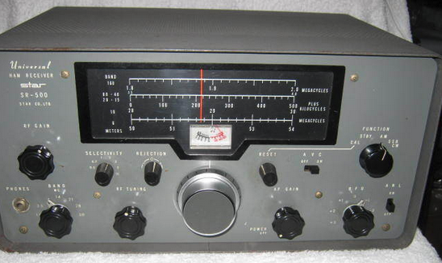

My biggest rig regret was my first commercial receiver. I bought a new (and even then, obscure) Star SR-500 all-tube receiver (1967 or so). It seemed to be a bargain (I think it was ~$100).  Covered 160-6 meter (no general coverage), AM/CW/SSB, and lots of features: RIT, selectable IF bandwidth, noise limiter, etc. The problem was not so much that the receiver was deaf (it wasn’t great but it wasn’t terrible), but that the frequency drifted all over the place. As the radio would warm up, signals would move a few kHz. It has a front panel knob for “calibrating” the frequency display, but I learned that it really was a band-aid for the fact that the frequency display was useless. It used a pulley-and-cable mechanism to tune the radio (and move the red cursor), but there was SO MUCH SLACK AND BACKLASH, that you had to tune past a station, then try to come back to it, gingerly. Also, the tuning ratio was so bad (a tiny movement of the big knob would move the frequency by a LOT), that the RIT was almost necessary just to tune a station in. Fortunately, this was back in the days when most people used a separate transmitter and receiver, so it really wasn’t critical if both stations in a QSO were on the same frequency. With this receiver, that was almost guaranteed. Remember back in the early novice days, when we were required to use crystal control, and everybody just had a bunch of crystals on random frequencies in the allowed band? It was standard practice to call CQ, then tune up and down, perhaps 10 kHz or more (oh, wait: back then it was 10 Kc), looking for someone calling you back. That’s part of the reason why it was “best practice” to call someone with their callsign THREE TIMES, then “de”, then your callsign TWO OR THREE TIMES. If you just gave your call, one time (like many do today), it’s likely that the CQ’ing station would not know you were calling him, and would probably not be fast enough to tune up and down to find you before you stopped sending. Sending the other station’s call 3x gave him time to find you. My advice to new hams back then was to allocate your radio budget heavily towards the receiver, and whatever is left for the transmitter. “If you can’t hear ‘em, you can’t work ‘em.” With the SR-500 above, often “you can’t tune them in”. Rich KE1B |
Attachment:
signature.asc
Description: Message signed with OpenPGP